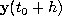
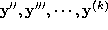

Taylor method is one of the best known one step method for solving ordinary differential equations numerically. The idea is to advance the solution using a truncated Taylor expansion of the variables about the current solution. Let
be an initial value problem and let h be the integration
step. To find  , we expand around
 and obtain
and obtain
A numeric approximation of is obtained by truncating (2) at a pre-determined order.
The main problem connected with the Taylor method is the need to compute higher derivatives  .